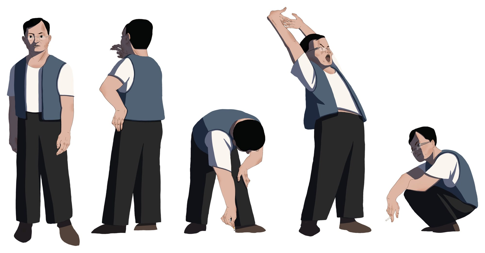
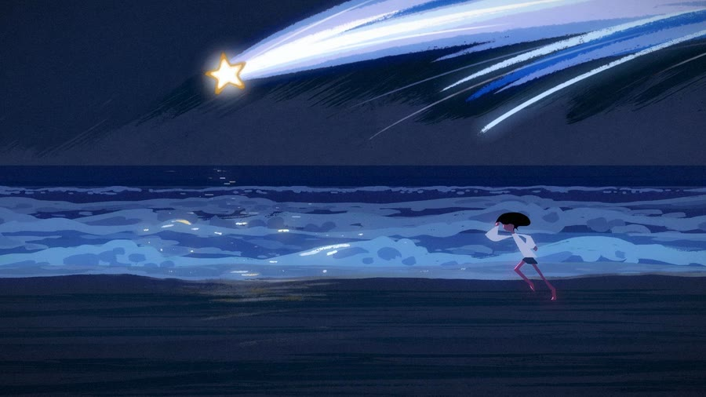
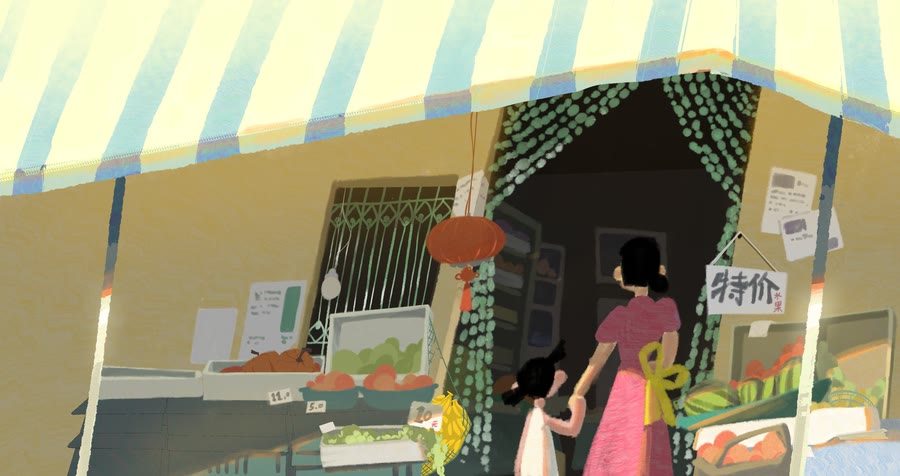
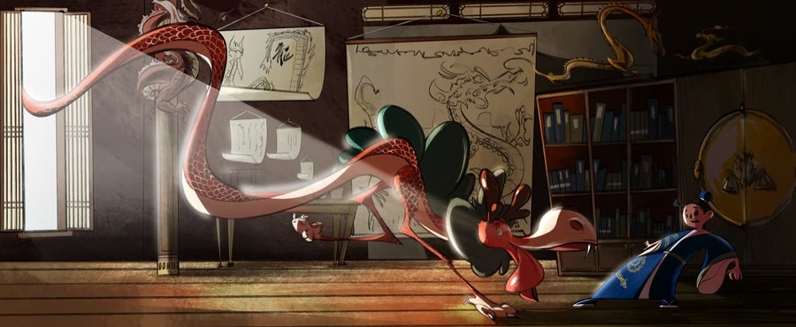

Father父亲Capstone short film in pre-production. Hand-drawn 2D, about four and a half minutes.
I draw storyboards, characters and color keys for hand-drawn films.
Animation student at ArtCenter College of Design, class of 2028. Looking for a visual development or story internship in Los Angeles for summer 2027.

Chasing the Star26-second 2D short, finished October 2026
KIDFour-person short in production: boards, color script, backgrounds, animation Rainy BakeryColor key
Rainy BakeryColor key
Lord Ye's Passion for Dragons叶公好龙Color key The Disappearing DetectiveColor key
The Disappearing DetectiveColor key